Browser-tab previews · native 16px favicons
Covan Labs
Covan Labs / Selected A
Previous finishing round. Continue to the current primary-mark exploration and responsive identity approach.
One selected base. Three optical refinements.
A1 preserves the benchmark; A2 refines the confluence; A3 refines the silhouette.


Browser-tab previews · native 16px favicons


Browser-tab previews · native 16px favicons


Browser-tab previews · native 16px favicons
A1 uses the exact selected geometry. A2 changes only the curved overlap. A3 keeps that overlap, tightens the upper terminal slightly and reduces the mark’s width by 2.5%. The wordmark stays consistent across all three.
Every size proof is shown at its native dimensions: 16, 24, 32, 64 and 256px. Tab previews use the exported 16px favicon; the test links open a document with that actual favicon.
Selected A reference ↗